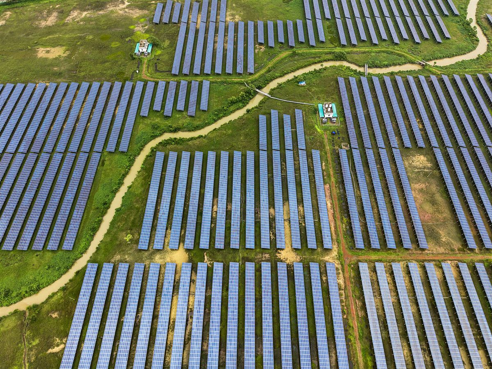
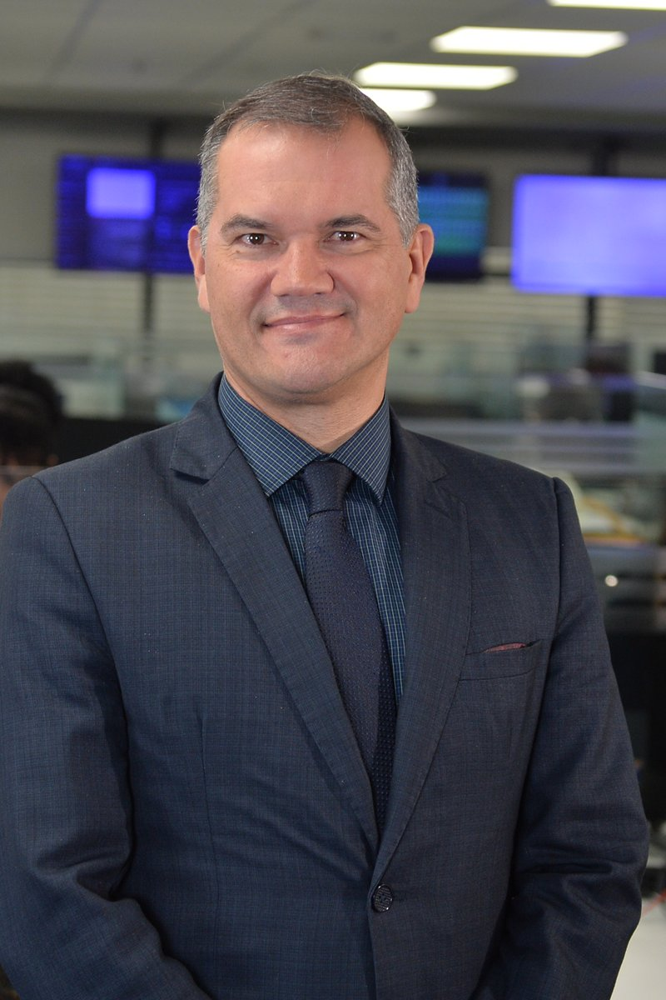

Encargos setoriais
Subsídios da CDE
Quem paga e quem recebe os subsídios da conta de luz, por estado e por nível de tensão, nos orçamentos de 2025 e 2026.
Abrir o estudoEstudos do Setor de Energia
A FKM Energy Strategy apoia empresas, investidores e instituições nas decisões de comercialização e de regulação de energia: estratégia e gestão de risco no mercado livre, contratos, tarifas e processos na ANEEL.
Unimos a experiência de quem dirigiu comercializadoras e áreas de regulação a uma análise rigorosa de dados públicos.
O que fazemos



Estudos publicados
Painéis interativos construídos com dados públicos da ANEEL, da CCEE e de outras fontes oficiais. Cada estudo tem um vídeo-resumo de cerca de 30 segundos.
Quem paga e quem recebe os subsídios da conta de luz, por estado e por nível de tensão, nos orçamentos de 2025 e 2026.
Abrir o estudoÍndices de concentração do mercado varejista de energia na área de cada distribuidora.
Abrir o estudoQuanto o consumidor de baixa tensão economizaria ao migrar para o mercado livre, por distribuidora, com premissas que você pode alterar.
Abrir o estudoPainel do CEO da Copel Distribuição: mercado, qualidade, perdas, receita e eficiência, comparados com as demais distribuidoras pela régua da ANEEL.
Abrir o painelOs estudos são elaborados a partir de dados públicos. Não são publicações oficiais da ANEEL, da CCEE nem das empresas analisadas.
Quem somos

Franklin MiguelFundador · FKM Energy Strategy
A FKM Energy Strategy é uma empresa de consultoria, pesquisa e desenvolvimento e treinamento dedicada ao setor de energia.
Franklin Miguel é Diretor-Presidente (CEO) e conselheiro de administração certificado pelo IBGC (CCA), com mais de 25 anos no setor elétrico brasileiro em comercialização de energia, regulação, governança corporativa e gestão de riscos.
Foi Diretor-Presidente da Electra Energia (2024 a 2026) e da Copel Mercado Livre (2016 a 2017 e 2019 a 2021), líder do segmento de comercialização do país em 2021, segundo a CCEE, com cerca de 3.000 MW médios para 2.000 clientes. Na Norte Energia, concessionária da UHE Belo Monte (11.233 MW), foi Diretor de Regulação e Comercialização de 2021 a 2024. No Grupo Copel, de 1998 a 2021, liderou ciclos de revisão tarifária da distribuição e da transmissão.
Participou de operações de fusões e aquisições na Electra e na Copel, com as visões regulatória, comercial e de receita, entre elas a aquisição da Enliv, em 2025. Integrou os conselhos de administração da ABIAPE, da Copel Mercado Livre e da Elejor e o Conselho Consultivo da EPE, e presidiu o Comitê Deliberativo da UEG Araucária.
Entre em contato
Consultoria, projetos de P&D, cursos e palestras. Conte o que você precisa e retornamos com uma proposta de trabalho.